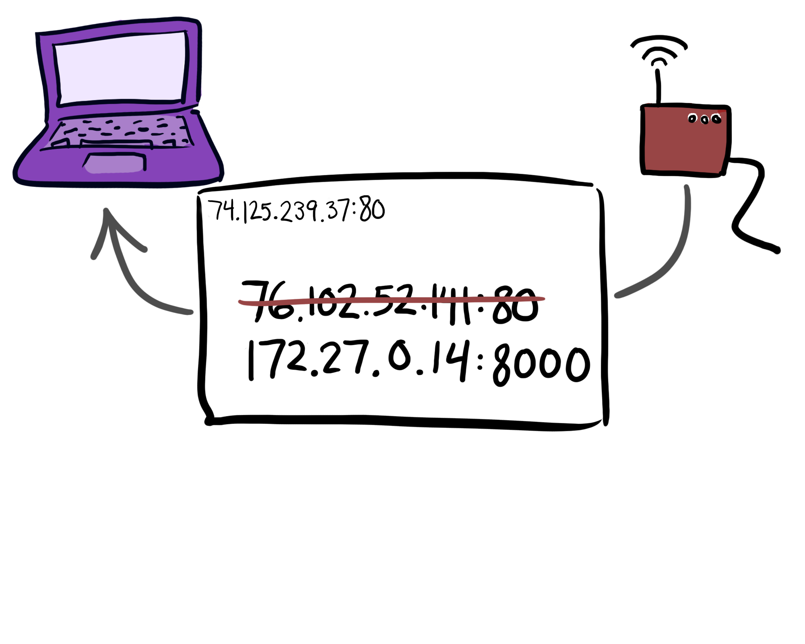

Turn Your Computer Into a Server
Karen Rustad & Asheesh Laroia
PyCon 2014 • Montr√©al, QC
Introduce selves w. names and jobs; Karen starts with takeaways
Takeaways
- You can understand basic networking.
- If you're online, you can run a server.
- You can do it reasonably safely, too!
Outline, part one: Simple sharing
- Python's SimpleHTTPServer
- Ports and interfaces
- IP addresses and NAT
- SSH [and other] tunneling
- The beautiful dream of IPv6
Outline, part two: Home servers
- Why and how to run a home server
- Bandwidth and other limits
- Security issues
- Follow-up resources and Q&A

Building a web app
Let's imagine you're building your first web application, in let's say Django.
$ python manage.py runserver 8000
You run Django's built-in webserver...
http://localhost:8000

And when you go to localhost:8000 in your browser, you see your Django app!

http://localhost:8000

Send a link to your roommate. oh right, lol localhost.
http://mycomputer.local:8000
try computer name dot local. Doesn't work.
$ cd my_project_directory
$ python -m SimpleHTTPServer
Serving HTTP on 0.0.0.0 port 8000
http://mycomputer.local:8000
Great for quick viewing and sharing of HTML/CSS/JS projects. Works even at mycomputer.local. Why?
$ cd my_project_directory
$ python -m SimpleHTTPServer
Serving HTTP on 0.0.0.0 port 8000
http://mycomputer.local:8000
Huh. What's this 0.0.0.0 thing?
$ python manage.py runserver 8000
Validating models...
0 errors found
March 07, 2014 - 23:37:49
Django version 1.5.4, using settings 'myapp.settings'
Development server is running at http://127.0.0.1:8000/
Quit the server with CONTROL-C.
Compare with django server log message
$ python manage.py runserver 8000
Validating models...
0 errors found
March 07, 2014 - 23:37:49
Django version 1.5.4, using settings 'myapp.settings'
Development server is running at http://127.0.0.1:8000/
Quit the server with CONTROL-C.
No 0.0.0.0, whatever that is.
$ python manage.py runserver 0.0.0.0:8000
Validating models...
0 errors found
March 07, 2014 - 23:37:49
Django version 1.5.4, using settings 'myapp.settings'
Development server is running at http://0.0.0.0:8000/
Quit the server with CONTROL-C.
Try prefixing port with 0.0.0.0 in server startup command
http://mycomputer.local:8000
It works! But why did it work?
Ports and Interfaces
To explain, need to talk about how ports and interfaces work in computer networking.
Ports and Interfaces
Maybe have heard of ports already

Entryways into your computer, over 60000 of them

Applications bind
Can connect to them from outside

Physical interfaces have each their own bank of ports -- wifi, ethernet, local loopback

django server only bound to local loopback

binding to all allows access over wifi interface
Can show off to roommate, others on same network

How to share your work with others?
IP addresses
To learn how, need to learn about how computers talk to each other across the internet: IP addresses. Two kinds of IP addresses
Private IP addresses
Within a network
Private IPv4 Blocks
- 192.168.x.x
- 172.[16 through 31].x.x
- 10.x.x.x
Certain IP address blocks assigned
http://mycomputer.local:8000
$ python -m SimpleHTTPServer
Serving HTTP on 0.0.0.0 port 8000 ...
172.27.0.14 - - [11/Mar/2014 12:51:33] "GET / HTTP/1.1" 200 -
When you run simplehttpserver...
http://localhost:8000
$ python -m SimpleHTTPServer
Serving HTTP on 0.0.0.0 port 8000 ...
127.0.0.1 - - [11/Mar/2014 12:49:47] "GET / HTTP/1.1" 200 -
...and view on localhost, see one private IP address in simplehttpserver logs. But if you view it on a different interface...
http://mycomputer.local:8000
$ python -m SimpleHTTPServer
Serving HTTP on 0.0.0.0 port 8000 ...
172.27.0.14 - - [11/Mar/2014 12:51:33] "GET / HTTP/1.1" 200 -
...different private IP address!
Asheesh steps up. (1) i want to talk about public svcs (2) karen talked about private (3) those wouldn't work for global
Public IP addresses
public can be reached from anywhere on Internet. routing done by IP. Your browser auto looks up in DNS. Show via cartoons.

Ask router first, has a cache of DNS records it's seen recently
Sends a DNS query automatically. Router checks cache & internal. Else broader.

passing looks like this. One server might be google's; one might be ISP's.
(pause) they find answer, looks like this. router gets that and...

fwds that to you, so you can make the request; I'll fmt into URL
http://74.125.239.37
You could visit this in a browser; usually wouldn't yourself; no surprise but yay!
If you want you can ask
$ host google.com
google.com has address 74.125.239.37
Transition back to Karen: Real websites have public IP addresses, but your computer almost certainly doesn't. So how does it connect to the internet?
Network Address Translation
(NAT)
your router does this

router stands between machines on your local network and the rest of the internet
how does your router keep track of whose traffic is whose?

send a packet to a website somewhere. TCP connection, so a random unused port is part of the from address. (so you can connect to more than one website at a time!)

router takes packet, assigns your private IP addr (with port) a random unused port number, and records in NAT table

rewrites packet with router's public IP address and the port number it assigned you

...and sends it along

get response back from website, addressed to router's public IP address

look at nat table for where to send packet based on port number

find your private IP address, rewrite packet and send it back to you
good: multiple devices can share one public address

bad: makes it hard for people outside your network to reach you
How can we get around this?
Remote port forwarding using SSH
SSH does lots of things, but this is what we're doing with it
Get access to a computer with a public IP address
- University server account
- Linode
- Amazon EC2
- A friend with a server
step one

connect to remote machine via ssh. this works just like any other internet connection, even w. NAT

your laptop connects whatever port it uses for the TCP connection for the ssh session to your application/simplehttpserver/whatever port. remote machine connects port 22 traffic with a different available port.

link people to the remote machine's IP address (or domain name, if it has one) on the chosen port.
$ ssh -g -R 9999:localhost:8000 myfriendsserver.net
the incantation that does all this
$ ssh -g -R 9999:localhost:8000 myfriendsserver.net
means "do forwarding of traffic"
$ ssh -g -R 9999:localhost:8000 myfriendsserver.net
"gateway ports" -- use all interfaces, not just local loopback
$ ssh -g -R 9999:localhost:8000 myfriendsserver.net
the port where your stuff will be accessible on the remote machine
$ ssh -g -R 9999:localhost:8000 myfriendsserver.net
what interface/port you want to connect on your machine
$ ssh -g -R 9999:localhost:8000 myfriendsserver.net
IP address or domain name for the remote machine
http://myfriendsserver.net:9999
success! all you need is money to pay for a remote server, or a friend who's willing to give you ssh access.
if you have no friends, money, or SSH access, life can be ok
free online svcs
ngrok & pagekite
mission help you debug your applications
both are open source, let you borrow subdomain, connect to it w/ client
client works like SSH port forward
Pre-demo: don't take my word for it
http://pycon.ngrok.com/
Thx. Nate Aune, Shimon Rura, Tony Abu-Assaleh
Post-demo: relies on borrowing ports; how the internet was supposed to work
90s warned ip shortage
IP Address Shortage Spurs Black Market
by Alyssa P. Hacker, MIT Voo Doo
Fake news, fake person, fake MIT mag. '90s. Hilarious. Next: light fixtures
Imagine an office filled with light fixtures on the network...
Philips Hue. Q. Can we give them addr?
next slide == IPv4 length; 6 billion phones. we'd run out
IPv4: 32 bits, looks like
74.125.239.37
luckily in 90s invented v6
IPv6: 128 bits, looks like
2001:0db8:85a3:0042:1000:8a2e:0370:7334
talk about next gen transition; next: blank
while blank, fourteen years after v6, here are percent of hits to google's websites over v6
purpose is: basically all addresses are public
- Jan 1, 2012: 0.25%
- Jan 1, 2013: 1%
- Jan 1, 2014: 2.5%

miredo & other IPv6 tunnels
work within NAT, yay
Karen talks; on to part two!
Running an always-up** server at home
Running an always-up** server at home
sysadminning is sometimes fun and exciting
What is a home server good for?
- Email
- Your own web services, e.g.:
- Home automation!
- Running your awesome Django app *all the time*
- &c.
but rewarding too!
hello@pycon.duckdns.org
volunteer!! send me email, great, thx
next == port forwarding
Home port forwarding
if you are on port 8000 and want to be on port 80

next: to make that real, UI will look like
what is my ip?

next: dyndns
hello@pycon.duckdns.org

next: DUCK
hello@pycon.duckdns.org
dyndns important b/c IPs change; thx duck for adding feature; next: scroll through email
now you sent me email, i want to read it; go back to demo; ask, any limitations
Knowing your limits
- Bandwidth
- "Buffer bloat"
- Max connections
- ISP rules
- ISP firewalls
switch to back to Eventbrite Security Engineer Asheesh
Risks
apply to all web apps
next: unavailable if get popular

next: access other users' private info; security bug or bad passwd

next: settings

next: upside down
next: at home, e.g. router
Risks at home
router: bad password, upside down, attack other computers
computer: attack yours, add key logger
next: mitigating
Mitigating
next: upgrade; twiki story
- Upgrade
next: separate
- Separate...
next: user account
- user account
next: machine
- machine
next: network
- network (DMZ)
next: owasp
- Learn: OWASP Top 10
1. parents call (2) hang up (3) check mail (4) surf web => google (5) jonathan (6) move image (7) apologize. Next: thanks
Takeaways
- You understand basic networking.
- If you're online, you can run a server.
- You can do it reasonably safely, too!
next: truly final
Thanks!
Karen Rustad • Asheesh Laroia
@whoisaldeka • @asheeshlaroia
aldeka@aldeka.net • asheesh@asheesh.org
next: thank video team, thank you for listening, further reading